Segurança
Poder ir e voltar do trabalho, deixar o filho na escola e abrir o comércio sem medo. Segurança não é discurso de campanha: é a condição para todo o resto funcionar.
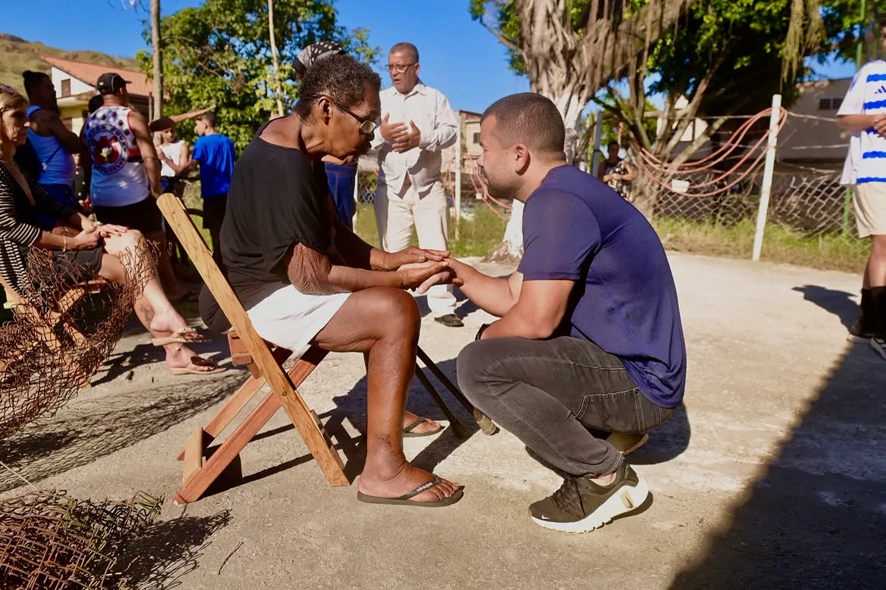
Mas antes de resolver, ele senta, escuta e anota. É assim que Felipe Pampolha tem percorrido o Rio de Janeiro: de Madureira à Rocinha, do Ponto Chic à Zona Oeste onde nasceu.
11123 Deputado Estadual · Rio de Janeiro
Política não se faz com promessas, se faz com escuta e respeito.
“Estar perto das pessoas, ouvir suas histórias e entender suas reais necessidades é a única forma de construir um trabalho de verdade.”
— Felipe Pampolha, 3 de setembro de 2026
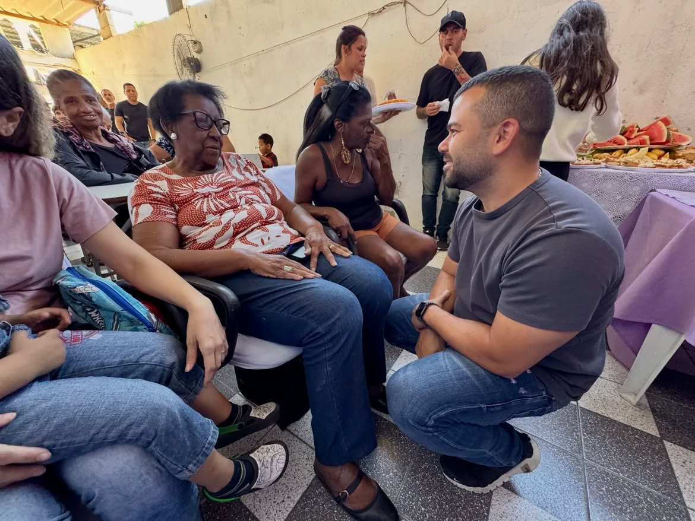
O compromisso que ele assumiu publicamente é curto e sem rodeio: garantir que a população tenha acesso a tudo isso com dignidade, eficiência e resultados.
Poder ir e voltar do trabalho, deixar o filho na escola e abrir o comércio sem medo. Segurança não é discurso de campanha: é a condição para todo o resto funcionar.
Atendimento que chega antes de virar emergência, posto que abre, consulta que sai da fila. O estado precisa cuidar de quem sempre esperou mais do que devia.
Praça cuidada, quadra aberta, lazer perto de casa. É o que transforma um endereço em um lugar onde dá gosto de viver e criar os filhos.
“Acesso ao esporte e oportunidade por meio da capacitação”: o caminho que ele aponta para quem está começando. Quadra aberta e curso que vira emprego.
Quero trabalhar por um Estado mais seguro, mais justo e mais preparado para o futuro.
Palavras do próprio candidato, em vídeo publicado em 2 de setembro de 2026. Estes são os compromissos assumidos publicamente até aqui. O programa completo é divulgado pela campanha ao longo do período eleitoral.
Não em estúdio, não em palanque. Nos encontros de idosos, nas quadras, nas ruas sem asfalto e nas festas de bairro, onde as pessoas contam o que está faltando.
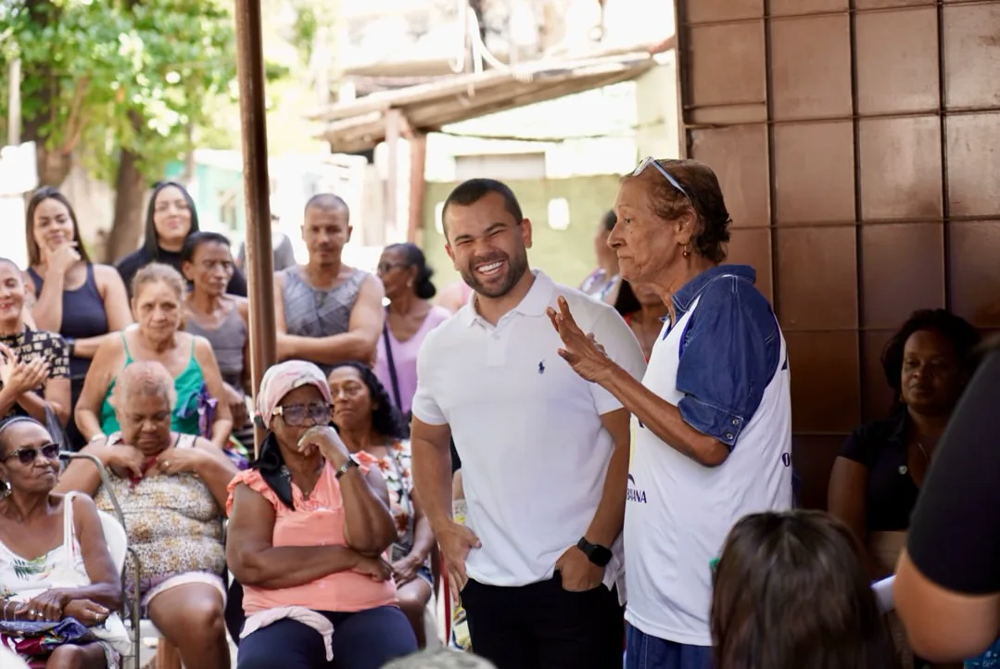
“Tenho orgulho de ser cria daqui. É por vocês e com vocês que eu sigo nessa caminhada.”
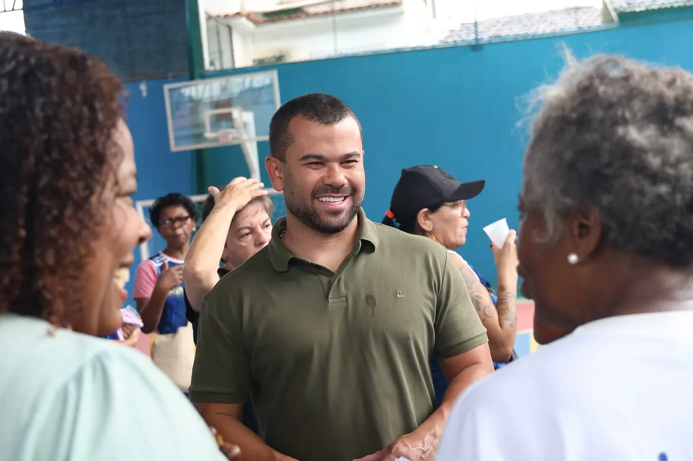
Zona Norte de manhã, Rocinha ao fim do dia. “Território feito de gente guerreira e trabalhadora.”
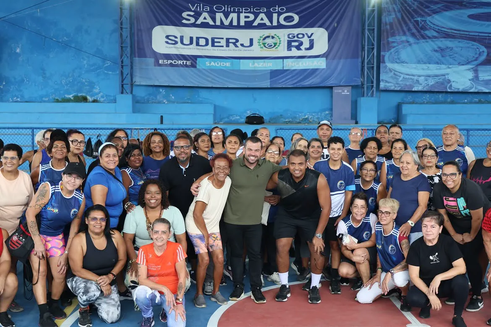
Esporte, saúde, lazer e inclusão no mesmo endereço. O tipo de equipamento público que ele quer ver funcionando.
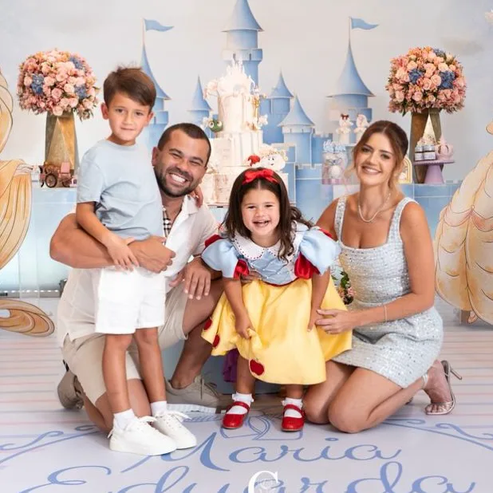
Felipe Pampolha se apresenta em três linhas: marido da Roberta, pai do Arthur e da Duda, gestor público e empreendedor movido por propósito. Não é uma biografia longa. É a de alguém que passou a vida resolvendo problema dos outros e resolveu se candidatar para resolver em escala maior.
É essa a origem do apelido que virou slogan: o cara que resolve.
Quase vinte mil pessoas acompanham a caminhada pelo Instagram. Estas são algumas paradas dela.
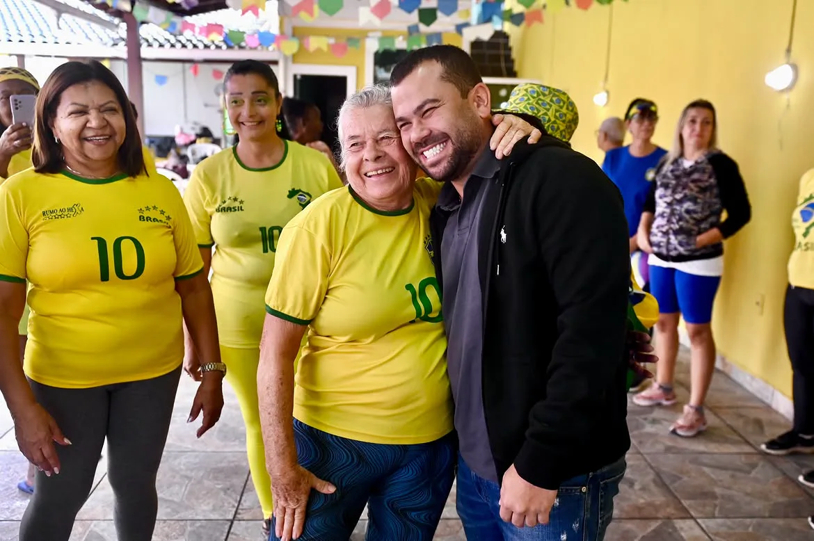
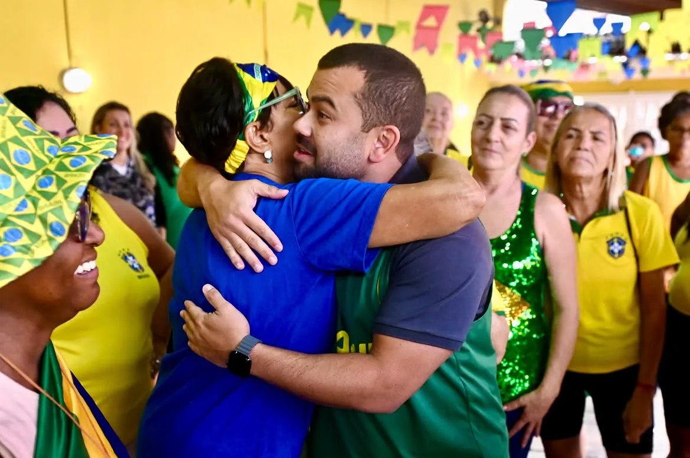
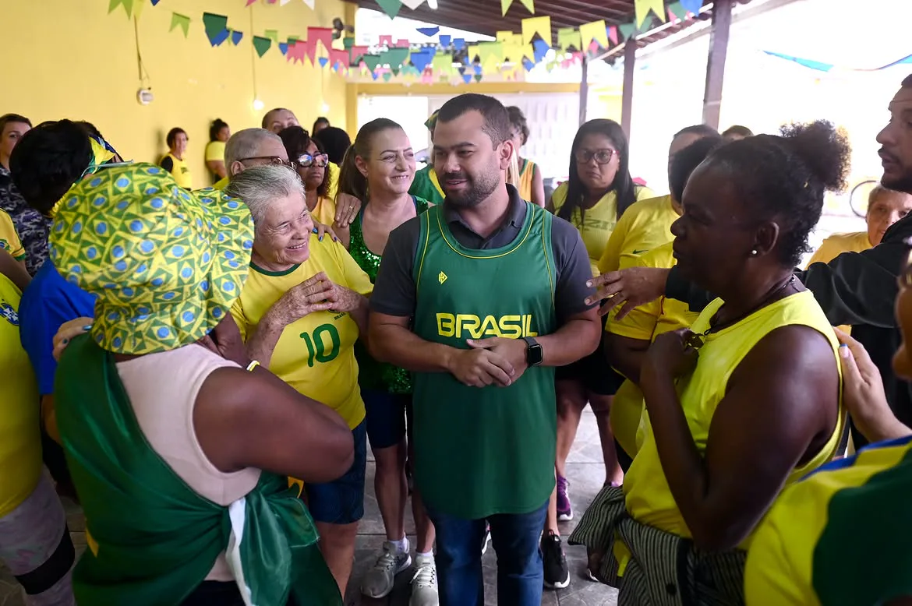
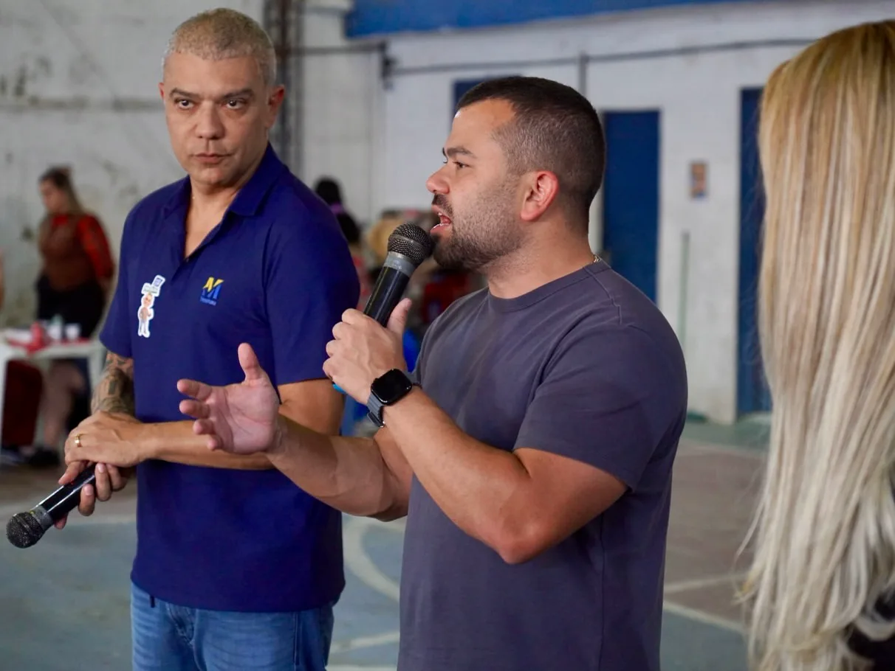
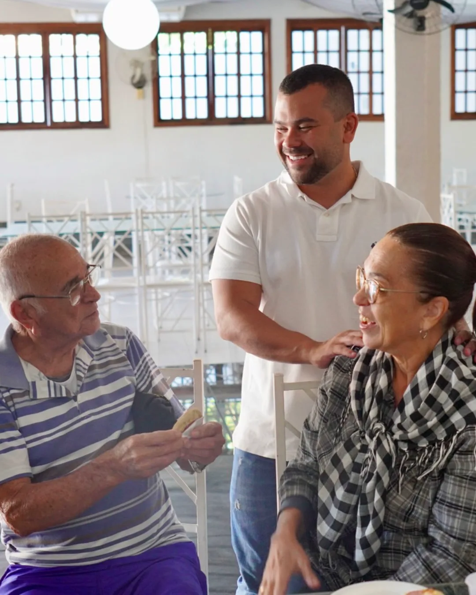
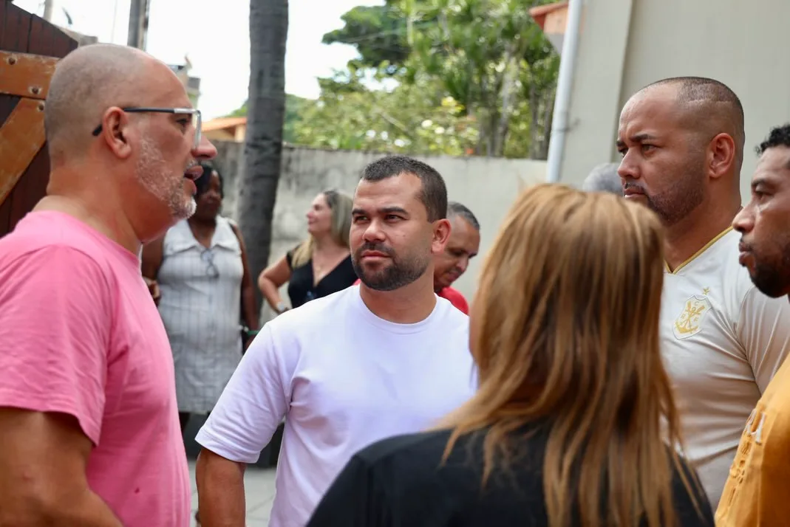
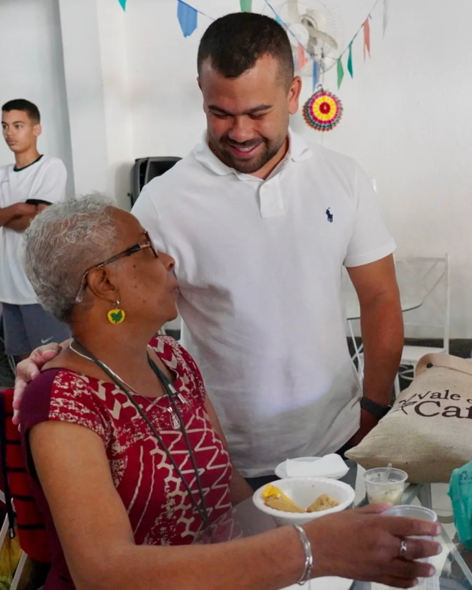
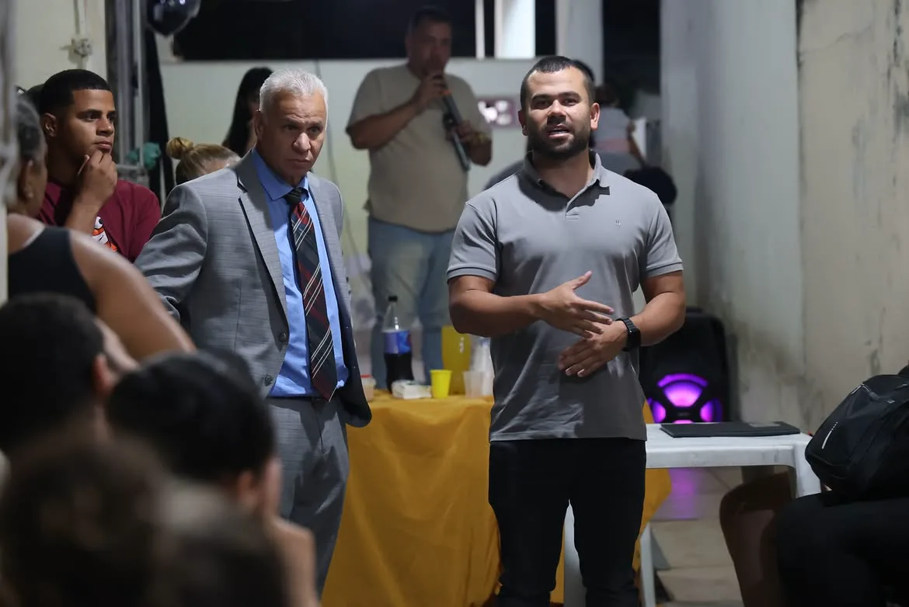
Seu voto para
Deputado Estadual
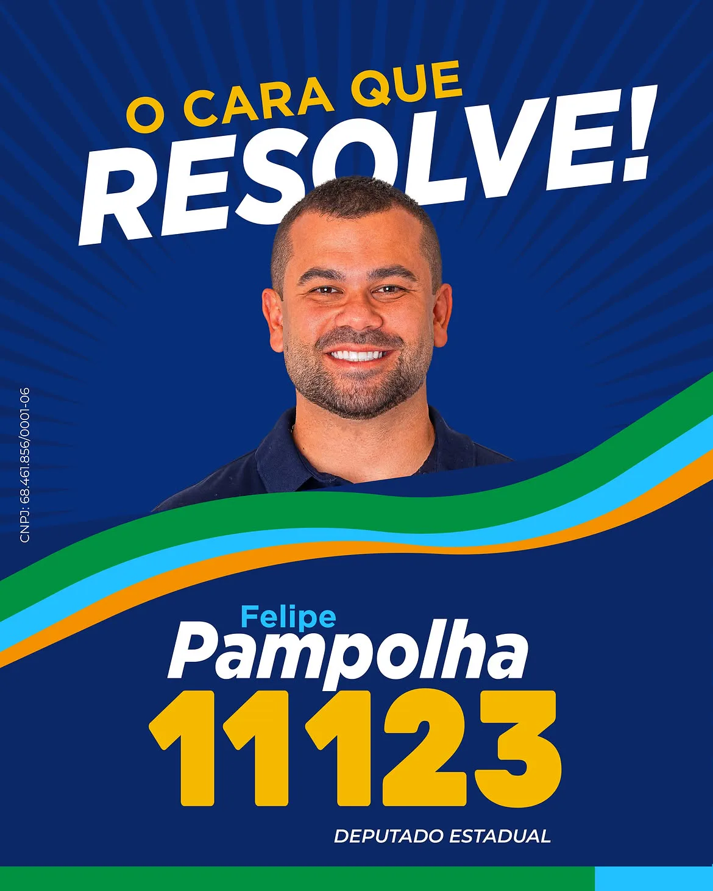
FELIPE PAMPOLHADeputado Estadual · Rio de JaneiroConfira e confirme. É 11123.